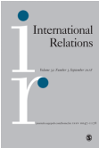

收录于合集

简 介
【文章原题】 Unipolarity’s unpeacefulness and US foreign policy: consequences of a ‘coherent system of irrationality’
【 作者简介 】：Haro L Karkour，英国莱斯特大学政治与国际关系系，研究的主要内容包括古典现实主义、后冷战时代美国外交、国际秩序的演变以及国际关系学科史。
【 编译 】 庞林立
【 校对 】 李逸成
【 来源 】International Relations, Vol.32, Issue 1,page(s):60-79, 2018
【 期刊简介 】

International Relations ，成立于1960年，现由塞奇出版公司（SAGE Publications）与戴维斯纪念研究所（DDMI）共同出版，每年出版四次。刊登文章覆盖国际关系多个方面，国际法、经济、种族、战略、哲学与文化等领域均有涉及。2017年该期刊的影响因子为1.172。
【提纲】
-
核心观点
-
摩根索与外交政策中的非理性行为
-
非理性与单极秩序下的不和平
-
结论
** 核心观点**
自冷战结束以来，学界针对单极秩序的持续性和稳定性进行了长达二十年的争论，大量学术研究关注世界秩序从19世纪“多极化”（plurality）向21世纪“非极化”（non- polarity）的变更、美国外交政策在此基础上的转变，以及国际和平与安全问题。现有的研究成果表明美国并不会迅速衰落，单极秩序会持续存在。然而单极秩序的稳定并不意味着和平，Nuno Monteiro就曾指出，单极秩序虽然不会导致强国之间的战争，但却无法阻止单极国家对其他国家发动战争，不论是出于防卫战略而维持现状还是基于进攻战略修改现状，单极国家都会使自己陷入战争。然而作者认为，区别于Monteiro的宿命论，美国在面对诸如科索沃战争等情况时仍然有其他非军事化的战略选择。本文所关注的重点在于为什么 美国外交为何很少选择非军事化政策 ，作者引用了 汉斯 · 摩根索著作中有关非理性行为的观点 ，指出后冷战时代的美国外交政策没有建立在对经验事实的谨慎评估上，相反，它重新诠释了美国政策制定者业已接受的简单化的世界图景，使用军事力量作为唯一的国家安全战略是保持图景中所含理想观念不被侵犯的唯一选择。作者认为，使用军事力量的理由从实现美国自身目标以及维护国际和平与安全角度来看无法成立，也最终导致了后冷战时代单极秩序下的不和平。
** 摩根索与外交政策中的非理性行为**
现有的关于摩根索理论的研究成果主要包含两大方向，一为指出摩根索对权力的研究并不意味着对政治中道德的抛弃，二为意识到摩根索作品中也包含了对现状的批判。在第五版《国家间政治》中，摩根索提出了“非理性”的概念，指出与理性分析类似，非理性概念同样可以解释美国外交政策的未来，然而这一点却被大多数学者忽略了。摩根索在早期作品《科学人对抗权力政治》一书中指出，政治活动是罪恶的，人性中对权力无止境的追求是出于在社会活动中证明自己的需要。为了防止政治决策者在处理实际问题时面临的道德与政治理想之间的困境，摩根索提出了用权力定义利益的方法，同时要求每个国家根据社会和政治现状事先确立利益的范围，以防止对权力的无止境追求，并减轻政治行动的罪恶属性。摩根索提出对国家利益谨慎评估的目标一方面是维护美国在领土、经济和社会文化认同等事关国家生存方面的利益，同时也包含了保障其他国家生存和自由的内涵。然而在越南战争的案例中，摩根索发现遏制共产主义的目标混淆了事关生死存亡的利益（vital interests）与美国追求的令人满意的利益(desirable interests)，这就导致使用军事力量成为唯一的战略选择。摩根索在此后的研究中认为美国外交政策遵循了连贯的非理性体系（coherent system of irrationality），相比于对经验事实进行谨慎分析，美国外交政策倾向于使用先验性的观念替代对政治行为可能导致后果的针对性分析，并依此决定是否采取行动，这就导致美国外交陷入自相矛盾的状况，它不仅混淆了国家所追求的利益（desirable interests）和必要利益(essential interests)的区别，还导致了国家所追求的与国家能获得的利益（possible interests）之间的断层。作者将摩根索对非理性的讨论用于分析后冷战时代的美国外交政策，指出单极秩序下的不和平并非是必然的，而是美国外交政策的非理性所导致的。
非理性与单极秩序的不和平
作者在这一部分提出的问题是美国外交政策是否对“必要的利益”和“想要的利益”以及“想要的利益”与“能要的利益”进行区分，以及美国外交策略是否基于这些区分而调整。作者分别考察了克林顿、布什以及奥巴马当政时期的经典案例——科索沃战争、伊拉克战争以及利比亚战争，而这些案例都对美国本身所追求的目标以及国际安全与和平问题带来了严重的损害。
在克林顿政府时期，美国外交政策奉行“扩大化”战略——意在扩大自由市场民主国家的数量，然而这一观念本身是模糊的，无法区分在不同案例所涉及的美国国家利益有什么不同，以及应当采用哪种军事/非军事手段。1999年，美国国家安全战略将国家利益分为事关生死的、重要的和其他三类，尽管只有第一种关乎美国生存，军事手段仍然作为维护其他两种国家利益的备选方案之一。1999年3月，美国总统克林顿在发表针对科索沃问题的讲话时指出南斯拉夫地区是一战和二战开始的区域，以及这一地区存在的人道主义危机，希望用人权和民主观念来增强使用武力的合法性。将科索沃问题与两次世界大战类比遭到了众多学者的批评，而人权和民主两种观念也是作为遏制和扩大化战略的一部分而事先存在的。美国支持科索沃独立并使用武力不仅损害了科索沃地区多种族民主的状况，也低估了中俄联合的影响力，无助于科索沃问题的解决。
在布什政府时期，9·11事件的发生并没有对单极秩序带来实际损害，然而布什政府在此之后却扩大了有关自卫的定义并针对恐怖分子发动“先发制人”的打击。2002年，美国国家安全战略扩大了对威胁美国国家安全事务的定义，声称要在威胁到达美国领土之前消灭它。这推动了新保守主义力量的兴起，对于这部分人而言，朋友/敌人二分法被广泛接受，并导致对经验事实的分析表面化。这一时期的非理性外交政策像是列出了需要被一一扳倒的敌人名单，而不考虑这些案例背后的区别以及可能导致的后果。在伊拉克战争中，萨达姆被新保守主义者等同于新希特勒，尽管伊拉克政府无法对美国造成真正意义上的威胁，但布什政府仍然认为伊拉克政府拥有大规模杀伤性武器并将其售予恐怖分子，以此为依据发动战争。然而伊拉克战争不仅严重损害了美国的道德地位，也影响了美国在单极秩序下的领导力。此后伊拉克频繁爆发社会运动和武装骚乱，在一定程度上促成了后来伊斯兰国的兴起。这一案例反映了政府对智库的误用导致了外交政策对“必要利益”和“追求利益”的混淆，智库以自己的先验观念重新诠释了有关伊拉克政府的情报，致使武力成为唯一可选战略。
奥巴马总统聘用了克林顿政府时期的国家安全顾问，因而成为克林顿政府“民主扩大化战略”的继承者。尽管2012年美国国家安全战略以多边主义替代了预先打击，但使用军事手段仍未被局限在美国核心国家利益上。在利比亚战争中，美国关键国家利益并未受到任何威胁，但它不仅在联合国获得了使用武力的许可，还尽可能寻求盟友一同负担战争责任。利比亚战争的最终结果证明，美国不仅未能将利比亚纳入民主国家阵营，反而导致该国成为各方势力斗争的战场。美国以人权为目标发动战争，促成了反对派的上台，但这并未有助于人权的改善，甚至导致美国政府需要与最初它武装起来的力量敌对来实现最初的人权目标。
综上而言，作者认为美国外交政策的非理性行为是指为在缺乏对事实谨慎评估的情况下以武力捍卫不可违背的先验性观念，这种行为无助于实现美国的目标，也会引起与其他大国的对抗，最终导致单极秩序下的不和平。
结论
本文指出 后冷战时代美国外交政策通常是非理性的，它没有建立在对经验事实的谨慎评估上，相反，它通过重新阐释的方式使客观事实符合之前接受的简单化的世界图景，这其中既包括了采用错误历史类比和任用错误的情报人员，也包含了夸大安全威胁和试图将非理智行为合理化的手段。 在南斯拉夫、伊拉克以及利比亚的案例中，敌人都被标准化塑造为希特勒的形象，这种给敌人“分门别类”的方法是非理性行为的典型特征，它导致外交政策重复之前的选择，而非针对不同案例的特点给出谨慎细心的评估。
点击 阅读原文 可获取全文pdf版！
**
**
【更多阅读】 **
**
【一周预告】国政学人下周（10.22-10.26）文章推送安排预告！
【SSCI·中东研究】漫比季(Manbij)合作路线图与美土关系的未来
【IA杂志· 斯托克斯】特朗普、美国霸权和自由国际秩序的未来
**【SSCI编译】特朗普的国家安全战略：“美国第一”遇上建制派
**
**【IS杂志·阿克顿】纠缠的升级：指挥和控制系统的弱点如何增加意外核战争的风险？
**
**【FA杂志】自由主义秩序的神话——历史偶然到传统观念的演变
**
**【外文编译·IS杂志】中美在东南亚的竞争
——权力转移还是竞争共存？
**
【外交事务】海伦·米尔纳：罗伯特·吉尔平的遗产对今天国际政治的启示
**
**

为方便学人及时接收高质量文章推送
别忘了把国政学人设置 星标 哦~
**
**